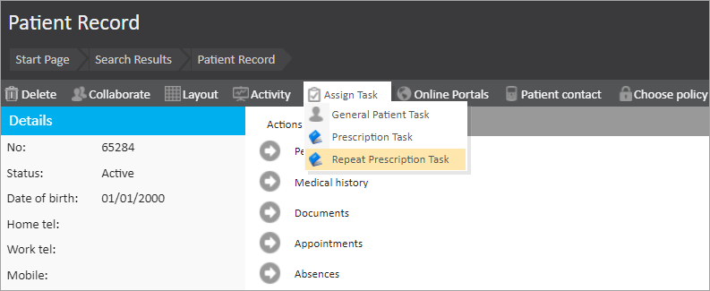
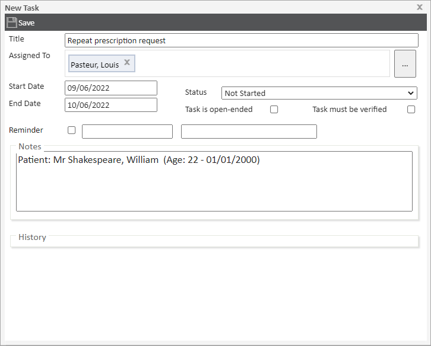
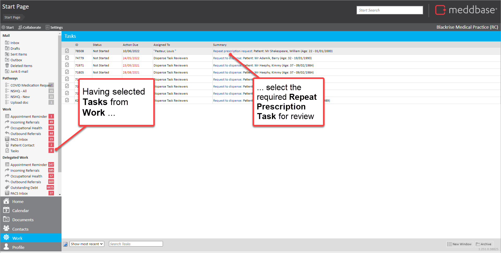
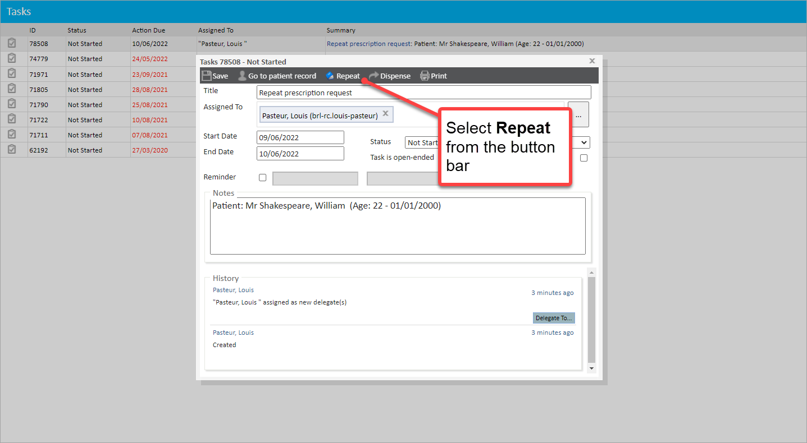
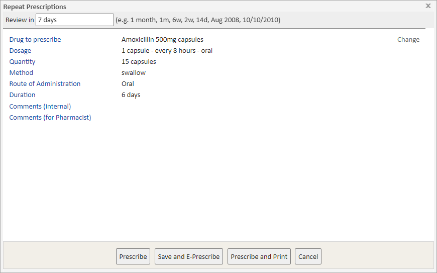
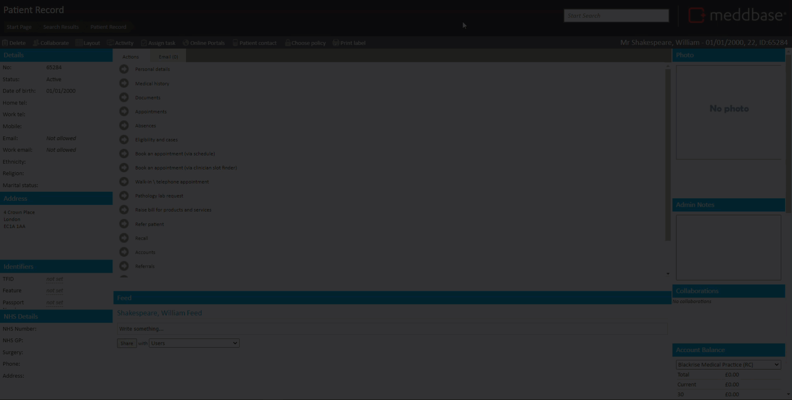

Meddbase users can create tasks which in turn enable the creation of Repeat Prescriptions.
This article outlines:
The repeat prescription task can be used to repeat both prescriptions and ePrescriptions.
There are some pre-requisites required to enable this process:
You can do this as follows:
1. Find the patient record
2. From the button bar within the patient record select Assign task > Repeat Prescription Task

In the New Task dialog that appears, default values are applied for Title, Start Date, End Date and Status.
3. From here:

4. Select Save
The Repeat Prescription Task is created and added to the Tasks list for the relevant user(s).
After a Repeat Prescription Task has been created, these can be reviewed and actioned.
To do this:
1. Go to Tasks from the Work group in the navigator
2. In the Task list that is then displayed, select the relevant Repeat Prescription Task

3. In the Task dialog that appears, click on Repeat in the button bar

4. In the Select prescriptions to repeat dialog that appears
The Select drugs to repeat list is populated with prescriptions made that were marked as repeats, and are currently within their review period. You can show expired prescriptions if you want to expand the list of prescriptions from which you can select.
5. Where Warnings for ... dialogs are displayed
You are presented with a Repeat Prescriptions dialog.

There is a range of actions offered at the bottom of the dialog as buttons. These are explained in the table below.
| Button | Outline explanation |
| Prescribe | Creates a prescription record for the patient. When created, the prescription is logged in the Medical History of the patient. |
| Save and E-Prescribe | By selecting this option, a Send electronic prescription dialog is presented. This enables the production of an ePrescription using the Medication Delivery feature. When created, the prescription is logged in the Medical History of the patient. |
| Prescribe and Print | Creates a prescription record for the patient and enables a printout of the prescription to be produced. When created, the prescription is logged in the Medical History of the patient. |
| Cancel | Closes the Repeat Prescriptions dialog and returns to the Select prescriptions to repeat dialog. |
6. From here, make the appropriate selection to
When the Repeat Prescription has been produced, the underlying Task dialog should be displayed again.
7. If you have finished with the task:
The Task is then marked as completed and no longer displayed in the Tasks list.
The video below shows how to create the Repeat Prescription Task for a patient and then create a Repeat Prescription from the task.
